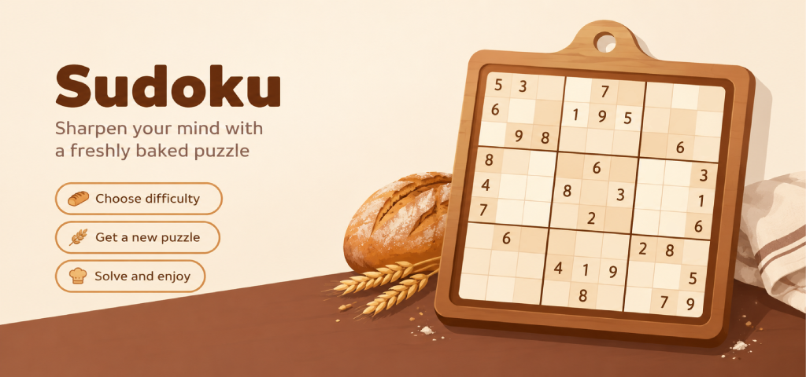
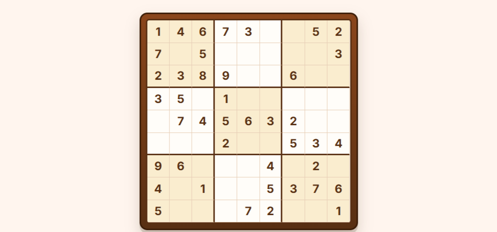
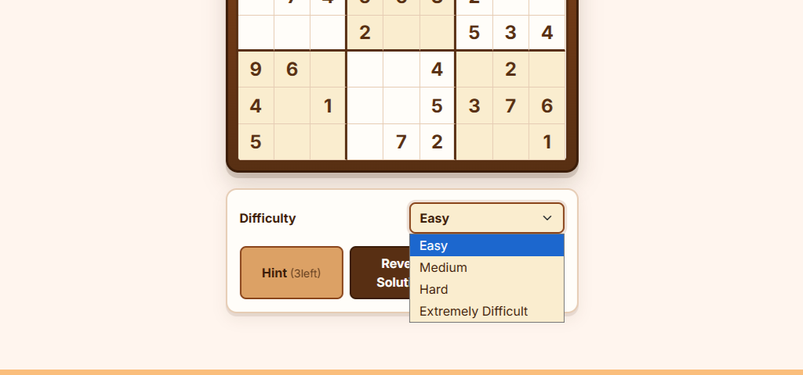
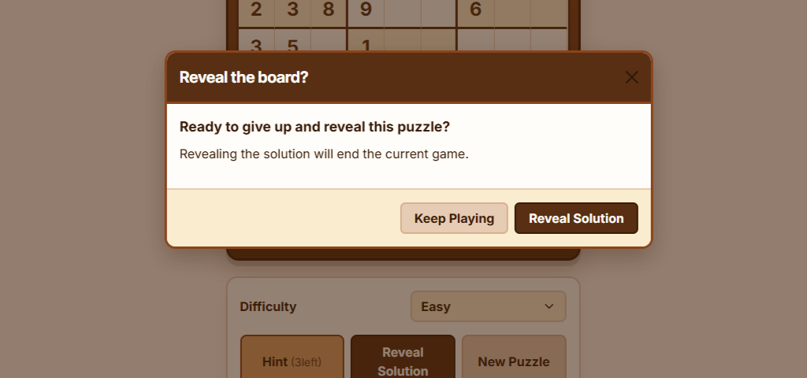

Free Odoo Website Add-on
Add a complete, interactive Sudoku game to your Odoo website. Four difficulty levels, unlimited puzzles, hints and automatic solving, all wrapped in a responsive bakery-inspired interface.
Free - Open website integration - Odoo 19 & 20

A game built into your website
Baker's Sudoku adds a dedicated /sudoku/game_page page to your
Odoo website, giving visitors an instant Sudoku puzzle without
sending them to another service.
The game runs directly in your Odoo website frontend using Odoo's OWL framework. Selecting cells, entering numbers and validating the board all happen interactively without traditional page reloads.
There are no external embeds, subscriptions or third-party game services involved. Install the module, publish your website and your Sudoku board is ready to go.
Game state is kept on the client, so playing Sudoku doesn't fill your Odoo database with game records or unnecessary writes.

Plenty of puzzle for your plate
Baker's Sudoku keeps the experience simple while still providing the features players expect from a modern Sudoku game.
Give players a choice between Easy, Medium, Hard and Extreme puzzles, suitable for everything from a quick break to a proper logic challenge.
Generated puzzles are checked for uniqueness, ensuring every board has a single valid solution.
Generate new puzzles whenever you want. Boards are created on demand rather than stored as a large collection in your database.
Players can request up to three hints during a game, revealing individual cells when they need a little help.
A confirmation-protected solve option lets players reveal the complete solution when they decide they've had enough of a particularly stubborn puzzle.
The game adapts to desktop, tablet and mobile screens, keeping the board comfortable to play regardless of where your visitors are.

Fresh puzzles on demand
Baker's Sudoku generates puzzles using a Python backtracking algorithm and verifies that each generated board has a unique solution.
Because puzzles are generated as they're requested, you don't need to maintain a database full of pre-generated boards. Players can simply start another game whenever they're ready.
A little help never hurts
Sudoku should be challenging, not frustrating. Players can use the built-in hint system to reveal up to three cells during a game.
If they really get stuck, the automatic solver can reveal the complete solution, but only after an explicit confirmation, helping prevent accidental spoilers.

Built for Odoo
Baker's Sudoku uses Odoo's existing web framework rather than introducing an external game platform to your website.
Built using Odoo's OWL component framework for a responsive, reactive gameplay experience.
Active game state is kept on the client rather than creating persistent database records for every game.
No iframe, external game provider or recurring service is required. Everything is installed alongside your Odoo website.
The game board and controls adapt to different screen sizes, from desktop monitors to mobile phones.
Who is it for?
Baker's Sudoku is designed for Odoo website owners who want to add a little interactivity without taking on another platform or service.
Add a fun interactive experience that gives visitors another reason to spend time on your website.
Give your community a simple daily puzzle or an extra activity alongside your existing website content.
Add a polished mini-game to an Odoo implementation without introducing an external game service.
Get Baker's Sudoku
Add Sudoku to your Odoo website completely free.
Odoo 19 & 20 - Odoo Website - OWL